Apri la galleria completa dei grafici (PNG e PDF)
Propagazione continua indipendente. P = probabilità target; F = √P.
Durata fisica T = 104.7197551. T = 20 × tau_s; tau_s = pi/(2*g_ref) = 5.235987756, g_ref = 0.3.
Validazione numerica, raggiungimento del target e convergenza dell'ottimizzatore sono criteri distinti. Nessun risultato implica da solo un quantum speed limit.
Tabella CSV · Configurazione · Provenienza
| case | seed | cohort | P_target | F_root | purezza | validato | obiettivo_raggiunto | fluence_modulazione | banda99_peggiore | potenza_sopra_soglia | P_iniziale | P_CRAB | guadagno_GRAPE | iterazioni_GRAPE | gradiente_proiettato_iniziale | gradiente_proiettato_finale | max_fotoni | P_hold_min |
|---|---|---|---|---|---|---|---|---|---|---|---|---|---|---|---|---|---|---|
| 1q | 100 | random | 0.999417 | 0.999708 | 0.999599 | True | True | 50.4157 | 4.98 | 0.183634 | 1.5335e-06 | 1.93434e-05 | 0.999392 | 80 | 2.56613e-05 | 0.00100755 | 10.0041 | 0.0605846 |
| 1q | 101 | random | 0.999072 | 0.999536 | 0.998896 | True | True | 49.7828 | 4.68 | 0.216175 | 1.55554e-07 | 4.5191e-06 | 0.999074 | 80 | 5.81988e-06 | 0.00162397 | 10.0087 | 0.0599703 |
| 2q_normalized_independent | 100 | random | 0.998797 | 0.999398 | 0.998142 | True | True | 122.081 | 4.44 | 0.130275 | 2.8478e-08 | 3.95836e-08 | 0.998802 | 80 | 5.18105e-08 | 0.000640846 | 10.0242 | 0.0565339 |
| 2q_normalized_independent | 101 | random | 0.995485 | 0.99774 | 0.993574 | True | True | 144.02 | 4.44 | 0.0663738 | 5.03296e-09 | 3.3503e-08 | 0.99537 | 80 | 9.1745e-08 | 0.00279464 | 10.0006 | 0.0719031 |
Statistiche: {"count": 2, "probability_mean": 0.9992445350595719, "probability_std_population": 0.00017245540080368382, "probability_median": 0.9992445350595719, "probability_min": 0.9990720796587682, "probability_max": 0.9994169904603756, "numerically_valid_count": 2, "validated_goal_count": 2, "validated_goal_fraction": 1.0, "probability_q25": 0.9991583073591701, "probability_q75": 0.9993307627599737, "selection_bias_top_only": false}
Probabilità target senza modulazione: 0.00000000.
Controlli falliti: nessuno
DettagliMaximum number of function evaluations has been exceeded.; STOP: TOTAL NO. OF ITERATIONS REACHED LIMIT
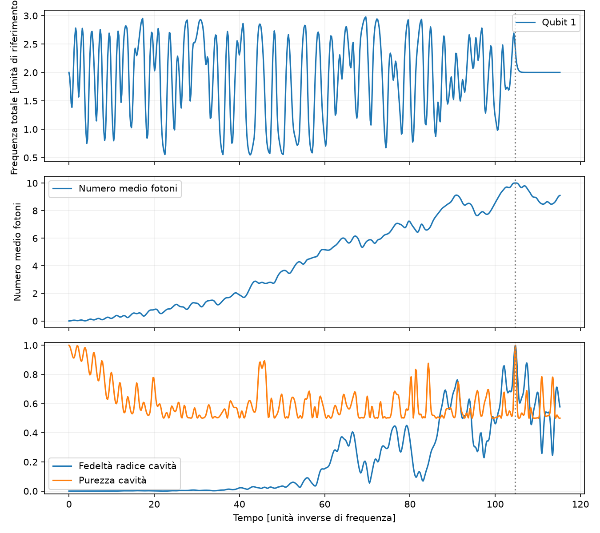
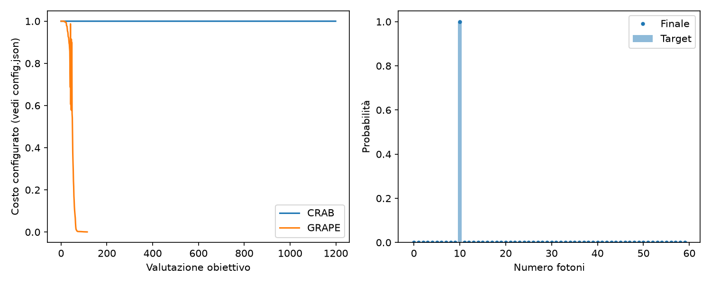
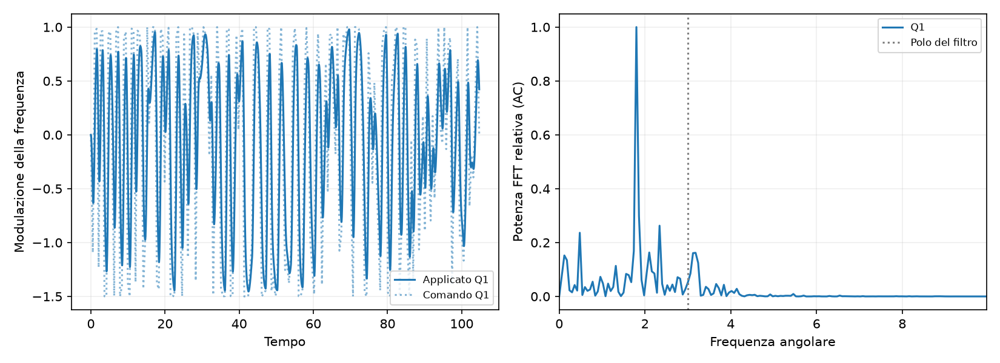
Controlli falliti: nessuno
DettagliMaximum number of function evaluations has been exceeded.; STOP: TOTAL NO. OF ITERATIONS REACHED LIMIT
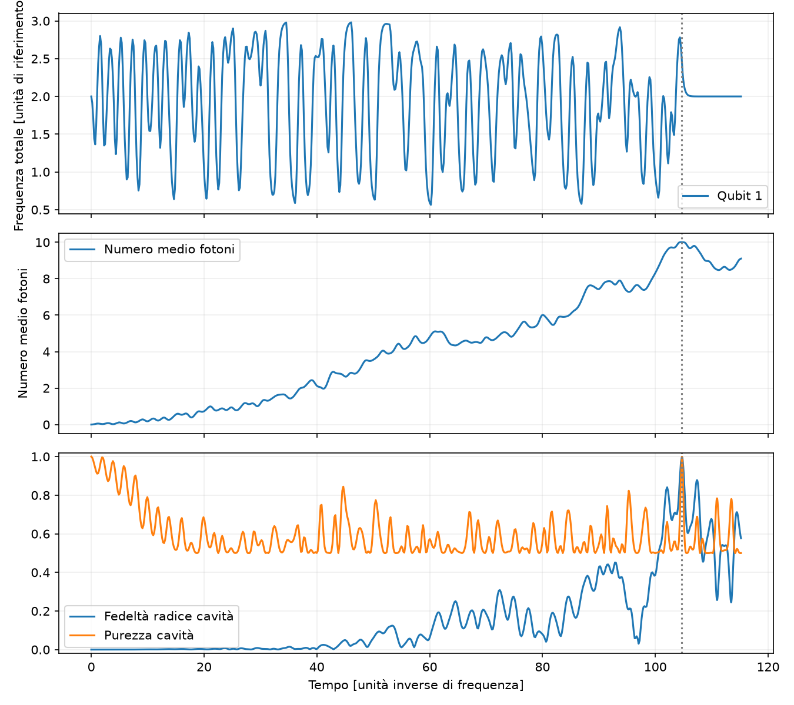
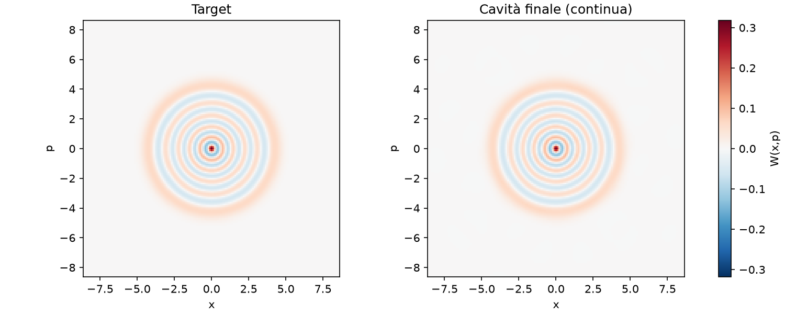
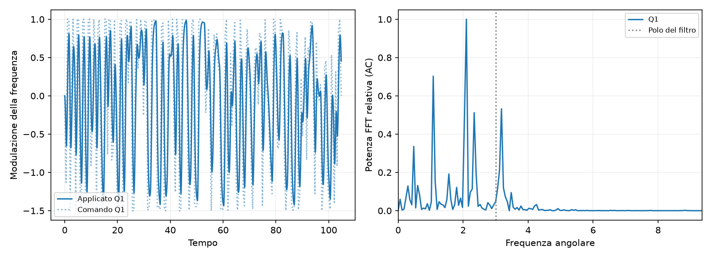
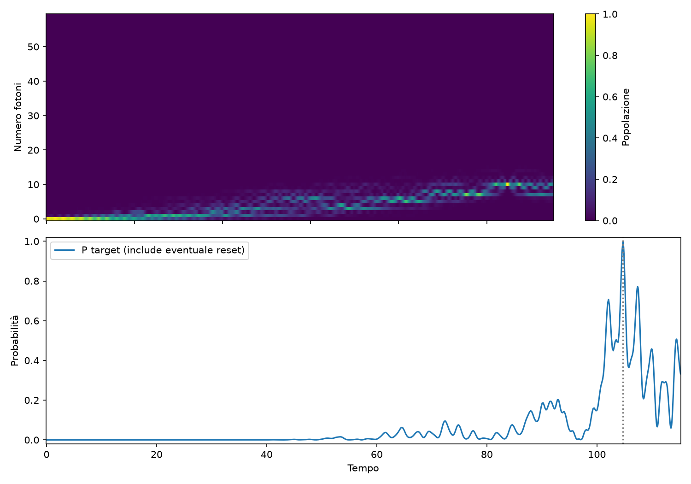
Statistiche: {"count": 2, "probability_mean": 0.9971413095585355, "probability_std_population": 0.0016558560585770987, "probability_median": 0.9971413095585355, "probability_min": 0.9954854534999584, "probability_max": 0.9987971656171126, "numerically_valid_count": 2, "validated_goal_count": 2, "validated_goal_fraction": 1.0, "probability_q25": 0.996313381529247, "probability_q75": 0.9979692375878241, "selection_bias_top_only": false}
Probabilità target senza modulazione: 0.00000000.
Controlli falliti: nessuno
DettagliMaximum number of function evaluations has been exceeded.; STOP: TOTAL NO. OF ITERATIONS REACHED LIMIT
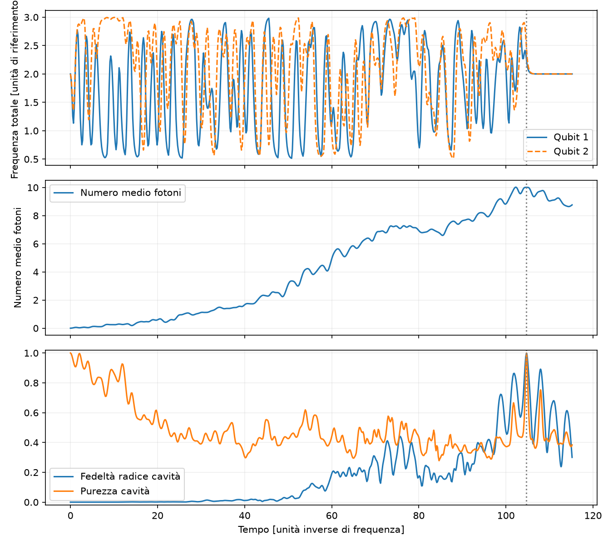
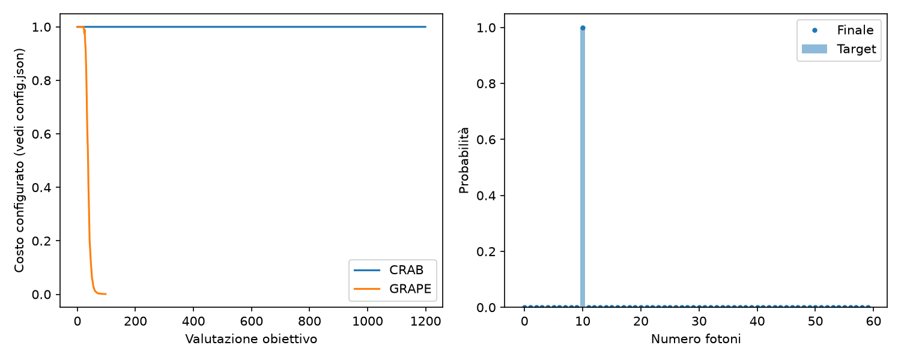
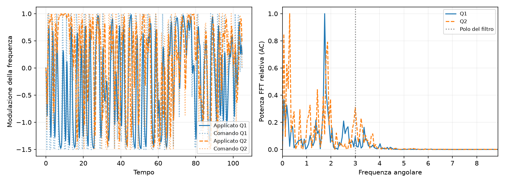
Controlli falliti: nessuno
DettagliMaximum number of function evaluations has been exceeded.; STOP: TOTAL NO. OF ITERATIONS REACHED LIMIT
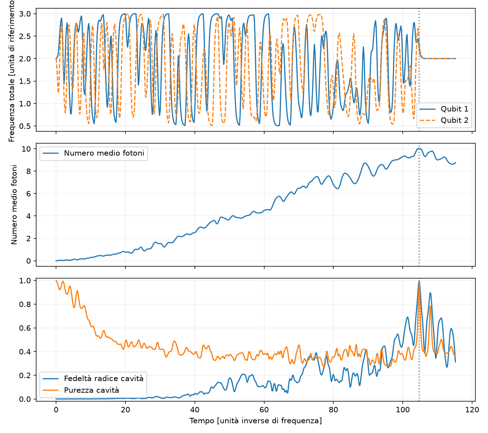
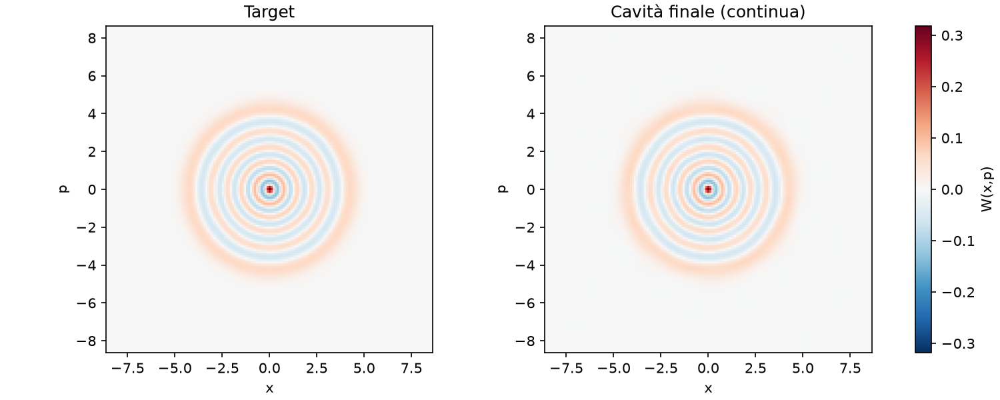
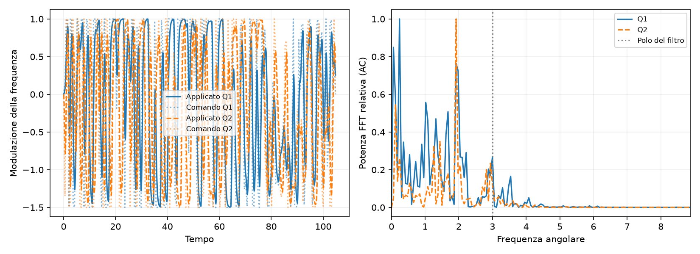
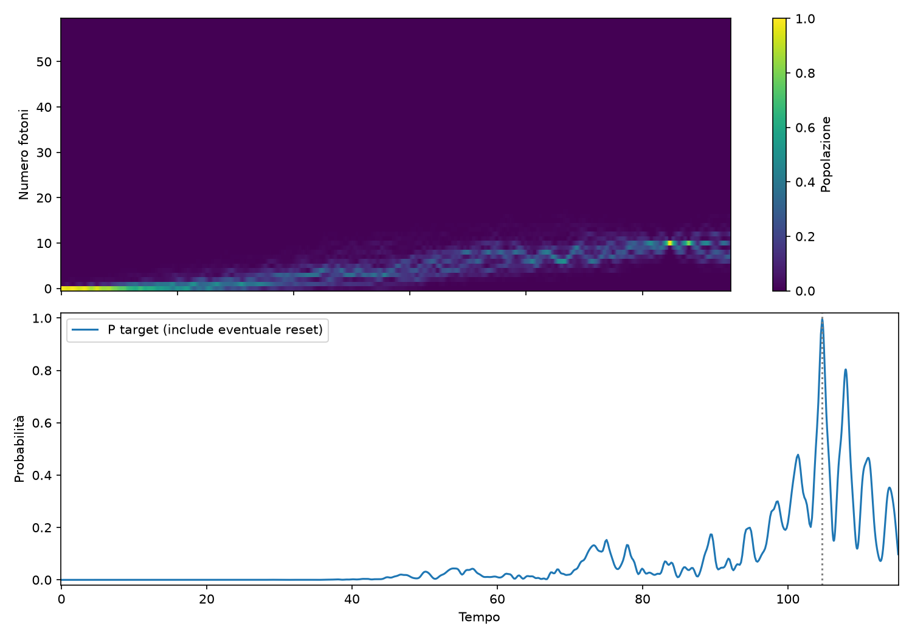